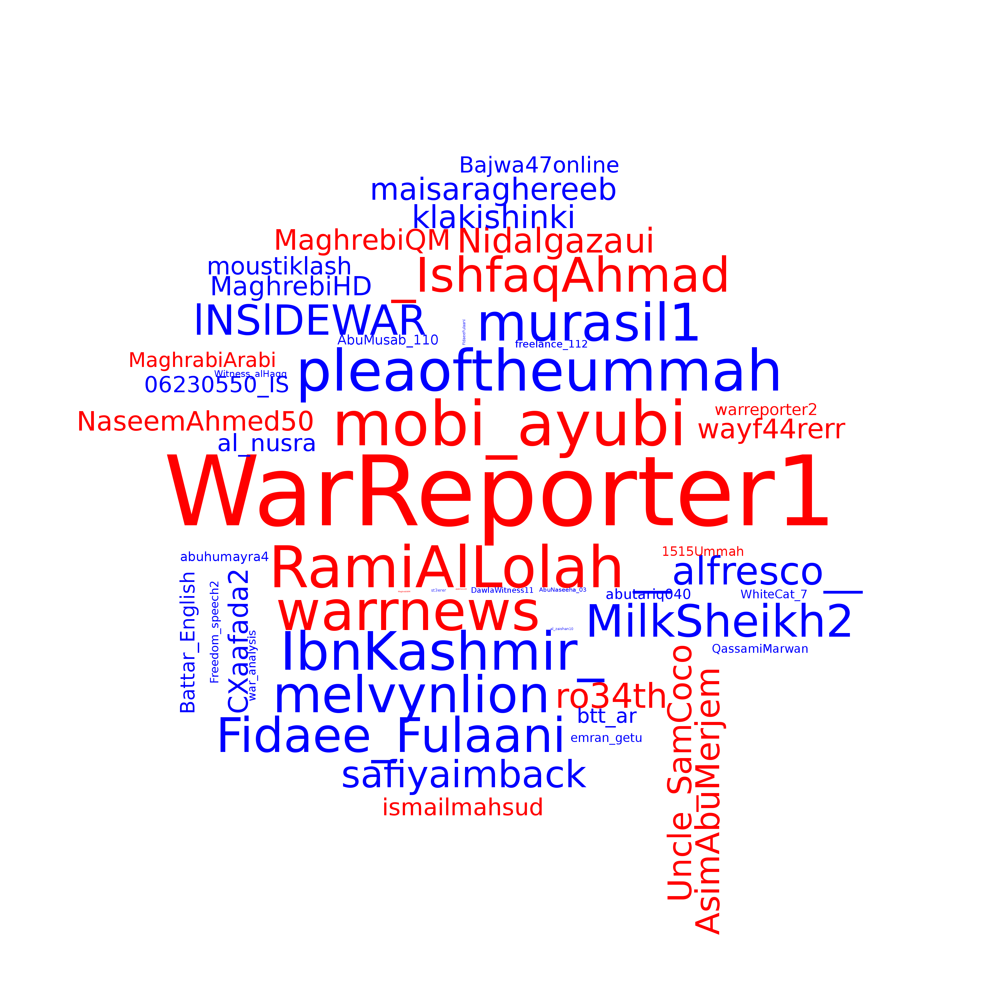
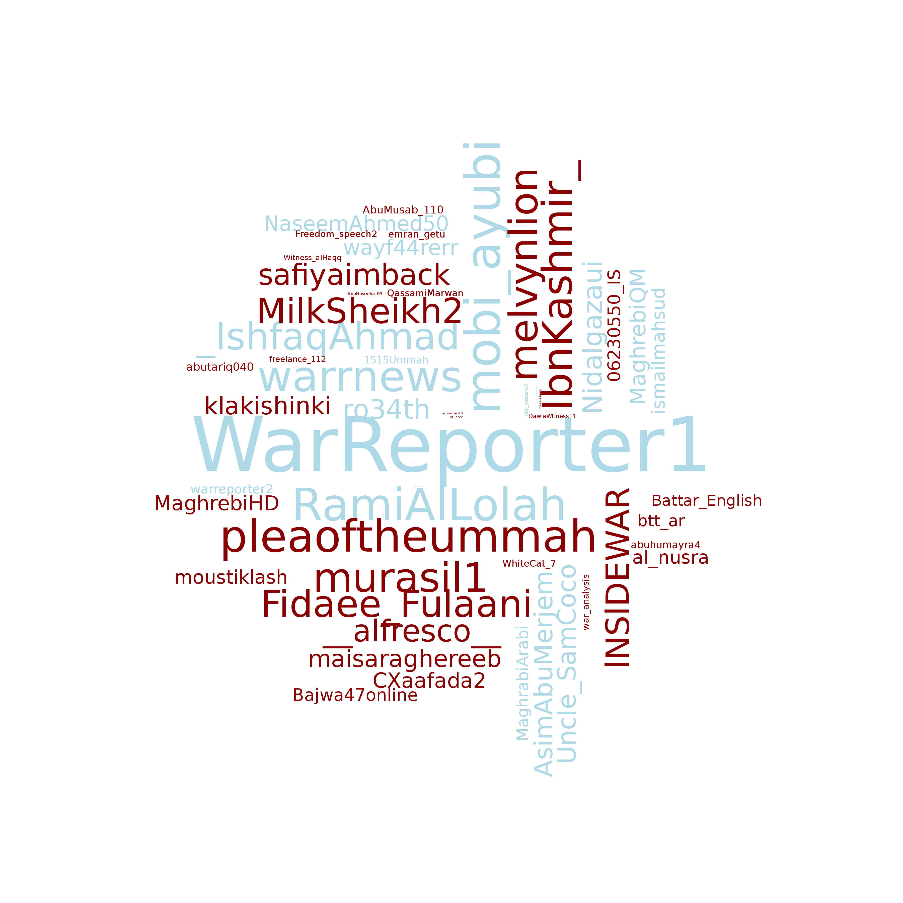
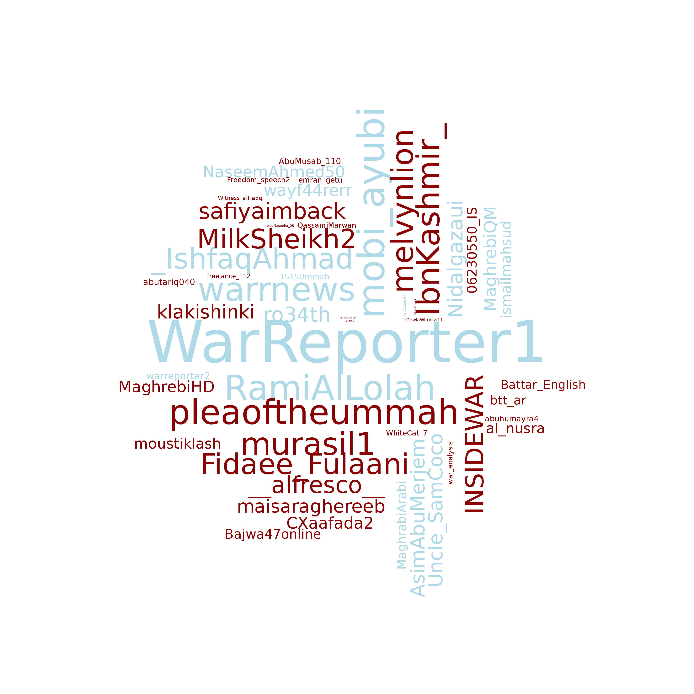

ISIS TWEET NETWORK ANALYSIS
Georgi D. Gospodinov
June 5, 2016
This document contains network analysis of the ISIS tweet dataset in https://www.kaggle.com/kzaman/how-isis-uses-twitter.
Model:
The initial model is based on agrregated pairwise co-occurrence of character strings in tweet for each username, Normalized by the sum of all tweet from both usernames being compared. This helps fairly compare usernames exceedingly large tweet volume and others with minimal tweet activity.
In this initial model, we use the username as the main identifier. We ignore description, time of tweet upload, the number of followers, nad other data. We will incorporate in future more detailed versions of this model.
This model generates an undirected weighted graph. Incorporating the time (tweet preceeding a given tweet) can provide directionality of influence). Notice that this approach will generate lots of linkage with most of it likely not essential, so we filter the graph with appropriate threshold determined by examining the distribution of weights and centrality of usernames.One advantage here is that the approach is not transaltion-dependent since we are matching strings on all tweets.
The dataset includes the following: Name, Username, Description, Location, Number of followers (at the time the tweet was downloaded), Number of statuses by the user (when the tweet was downloaded), Date and timestamp of the tweet, the tweet itself.
Goals (from Kaggle): 1. Social Network Cluster Analysis: Who are the major players in the pro-ISIS twitter network? Ideally, we would like this visualized via a cluster network with the biggest influencers scaled larger than smaller influencers.
Keyword Analysis: Which keywords derived from the name, username, description, location, and tweet were the most commonly used by ISIS fanboys? Examples include: “baqiyah”, “dabiq”, “wilayat”, “amaq”
Data Categorization of Links: Which websites are pro-ISIS fanboys linking to? Categories include: Mainstream Media, Altermedia, Jihadist Websites, Image Upload, Video Upload,
Sentiment Analysis: Which clergy do pro-ISIS fanboys quote the most and which ones do they hate the most? Search the tweet for names of prominent clergy and classify the tweet as positive, negative, or neutral and if negative, include the reasons why. Examples of clergy they like the most: “Anwar Awlaki”, “Ahmad Jibril”, “Ibn Taymiyyah”, “Abdul Wahhab”. Examples of clergy that they hate the most: “Hamza Yusuf”, “Suhaib Webb”, “Yaser Qadhi”, “Nouman Ali Khan”, “Yaqoubi”.
Timeline View: Visualize all the tweets over a timeline and identify peak moments
INITIAL ANALYSIS AND FILTRATION
We notice a consistent group of usernames at the bottom of the weighted degree distribution and the centrality measures. We exclude these usernames from this analysis as their contribution to the weighted links is not essential. This allows us to avoid challenges with the 20-min runtime for the script.
Below the plots, we displayt eh top usernames according to weighted degree and centrality (eigenvector centrality) to support the apporach of filtering the msot significant usernames for the purposes of this initial model.
| weighted_degree | centrality |
|---|---|
| WarReporter1 | WarReporter1 |
| mobi_ayubi | mobi_ayubi |
| RamiAlLolah | RamiAlLolah |
| Fidaee_Fulaani | pleaoftheummah |
| pleaoftheummah | warrnews |
| _IshfaqAhmad | _IshfaqAhmad |
| warrnews | Fidaee_Fulaani |
| MilkSheikh2 | AsimAbuMerjem |
| IbnKashmir_ | warreporter2 |
| murasil1 | NaseemAhmed50 |
INJESTING THE DATA AND TRANSFORMATIONS
We transform smot of the columns as character, and further truncate the usernames to have at most 20 characters in length in order to eliminate certain anomalous usernames.
GENERATING THE ADJACENCY MATRIX
This is the most computation-expensive aprt of the model, as we do pairwise tweet comparison for each username and all the tweets. This is a highly parallelizable process so future solutions can handle millions of usernames with billions of tweet in the whole set.
Here is a sample of a few usernames and some of their (truncated) tweet.
| username | tweet |
|---|---|
| al_nusra | 🔴عاجــل | #بغداد | قتلى و جرØÙ‰ جراء إنفجار سيارة مفخخة في الكاظمية شمال بغداد |
| al_nusra | Deir ezzor: More than 30 syrian regime forces have been killed in addition to 40 injured & 15 mi |
| al_nusra | 🔴عاجـل | #ديرالزور | مقتل أكثر من 30 عنصر من النظام المجرم بالإضافة إلى 40 Ø¬Ø±ÙŠØ و 15 مفقود في 3 أيام |
| al_nusra | @HadiAlabdallah stop saying daesh and drop ur nationalism flag and mentality and give bayah to the d |
| al_nusra | @OoOHarray @HadiAlabdallah wow tough keyboard warrior using foul language. It’s taking u 60 nations |
| al_nusra | @Journalist_Omar ALLAH (swt) is the protector |
| al_nusra | destruction of a Abrams tank & minesweeper & a bulldozer to d iraqi army after being targete |
| al_nusra | 🔴عاجــل | #الأنبار | وكالة أعماق تدمير دبابة من طراز أبرامز وكاسØØ© ألغام وجرافة بعد استهدافهم بعبوات |
| abubakerdimshqi | RT @MuslimPrisoners: Plz read the press release published by the family of Sheikh Abu Hamza regardin |
| abubakerdimshqi | @TawheedNetwrk may Allah protect him from all Murtadin and Kuffar may allah make it easy for him an |
| al_nusra | Lebanon | bomb explosion on the internal road in Chtaura targeted a van of the terrorist group hezbu |
| al_nusra | 🔴عاجـل | #لبنان | انفجار عبوة ناسفة على الطريق الداخلية في شتورا استهدفت فان لـ Øزب الله الإرهابي كا |
| abubakerdimshqi | RT @UmmUmarah2: Ya Allah! We ask u to protect pur beloved sheikh from any harm! HasbunaAllah! http |
| abuhanzalah10 | RT @RamiAlLolah: More cluster bombs being thrown on civilians in #Syria by #Russia|n jets.. http://t |
| abuhanzalah10 | RT @RamiAlLolah: #Saudi Scholars: #Russia launches a new Orthodox Crusaders campaign on the Levant. |
| abuhanzalah10 | RT @RamiAlLolah: Not from #Syria this time.. From #Fallujah after fierce #Iraq|i army bombardment on |
| abuhanzalah10 | RT @RamiAlLolah: This #photo sums up the West policies in #Syria and #Iraq.. https://t.co/LTAMiHbaEt |
| abuhanzalah10 | RT @RamiAlLolah: More clear #video footage of #Russia|n SU-24 jet dropping its payload somewhere in |
| al_nusra | 🔴URGENT CONFIRMED NEWS: #Syria Damascus: assadi regime aircraft has been shot down in the eastern G |
| abuhanzalah10 | Assalam Alaykom! Give a shout ya ikhwa. unable to recover previous account : @AbuHanzalah2 |
| al_nusra | BREAKING! Video: The downing of a warplane in the eastern Ghouta http://t.co/jXGDF3XSVp |
| abuhanzalah10 |
Allah destroyed the concept of Nationalism 1400 years ago. “The believers are but a single brother |
| al_nusra | إسقاط طائرة Øربية في الغوطة الشرقية و هبوط قائدها فوق سماء الغوطة http://t.co/jXGDF3XSVp |
| abubakerdimshqi | RT @Khaled_Siddique: EVERY MUSLIM NEEDS TO RT THIS NOW! Public react to hearing Qur’an for the first |
| abubakerdimshqi | RT @Abdussamad_AIF: Most of the sins committed by the son of Adam are sins of the tongue. |
| abubakerdimshqi | wish my kids have the same happiness, where i live all a big lie #IS #IslamiState #Lions #Aleppo ht |
| al_nusra | @farsmoltm: @Obataldeim35 @jihadiuser21 @mo5athb104 @al_nusra @zaint52 جزاك الله خير |
| al_nusra | 🔴 | #ديرالزور | وصول أكثر من 15 جثة لجنود للنظام السوري إلى مشفى ديرالزور العسكري منذ قليل قتلوا على |
| al_nusra |
| #الØسكة | انفجار في المربع الأمني وسط مدينة #القامشلي شمال مدينة الØسكة #Øلب #دير_الزور #ديرالزور |
| al_nusra | 🔴عاجــل | #ديرالزور | مقتل Ø§Ù„Ø´Ø¨ÙŠØ â€œØ³Ù„ÙŠÙ…Ø§Ù† وردة†إثناء إشتباكات مع مقاتلي الدولة وهو من قرية الجماسة |
| al_nusra | 🔴 | #بغداد | وكالة أعماق اغتيال ضابط استخبارات عراقي برتبة نقيب و 7 من مرافقيه بعد استهدافهم بعبوة ن |
We create the graph object and generate some basic statistics.
BASIC ISIS TWEET NETWORK STATISTICS
NUMBER OF NODES: This is the number of usernames in this tweet network.
## [1] 54NUMBER OF EDGES: This is the number of username-to-username connections in this tweet network. Each connection between usernames indicates an aggregate number of shared strings (words) between suernames using pairwise tweet-to-tweet comparisons. That number is normalized by the number of tweet and filetered to ignore strings of length < 3.
## [1] 1431DISTRIBUTION OF NODE DEGREES: The degree indicates the number of distinct usernames connected to a given username. This is the distribution of node degress for this network.
## Min. 1st Qu. Median Mean 3rd Qu. Max.
## 53 53 53 53 53 53DISTRIBUTION OF WEIGHTED NODE DEGREES: The weighted degree indicates the weighted sum of distinct connections to a given username. This is the distribution of weighted node degress for this network.
## Min. 1st Qu. Median Mean 3rd Qu. Max.
## 29.45 144.80 192.20 211.10 251.40 602.70DISTRIBUTION OF EDGE WEIGHTS: We look at the distribution of weighted edges across the entire network.
We will later look at further statistics as we dig deeper into the network structure.
ISIS TWEET NETWORK VISUALIZATIONS
We visualize the network under different filtrations by weighted degree.

We clearly notice a certain group of usernames which is dominant in the weighted association sense: their network is large and their associations are strong. We will perform some centrality analysis (reproducing some of the initial plots for the particular filtration here) to further look at the structural dominance of the suernames.
NETWORK ANALYSIS AND DOMINANT USERNAMES: CENTRALITY MEASURES
We first note that both degree and weighted degree seem good differentiators for the top usernames with the weighted degree being mroe sensitive (larger variation in node size) as compared to the degree itself.
SOME MORE CENTRALITY MEASURES: We filtered some less-influencial usernames at the beginning so we reproduce some of the analysis here with the existing dataset.
BEtweenness centrality adn edge-betweenness centrality are both very rigid measures for very dense networks, whcih is what the original network is. In it, only the top few usernames stand out as outliers for both measures, ther est are nearly equal. Closeness centrality on the other hand is a very strong differentiator, mostly since the paths are weighted paths. Eigenvector centrality is also strong, and local clustering is included to comapre the results of the centrality measures.
CENTRALITY HEAT MAPS OF THE ISIS TWEET NETWORK
HEAT MAP ACCORDING OT EIGENVECTOR CENTRALITY: Eigenvector centrality (also called eigencentrality) is a measure of the influence of a node in a network. It assigns relative scores to all nodes in the network based on the concept that connections to high-scoring nodes contribute more to the score of the node in question than equal connections to low-scoring nodes. Google’s PageRank is a variant of the eigenvector centrality measure.[24] Another closely related centrality measure is Katz centrality.

HEAT MAP ACCORDING OT BETWEENNESS CENTRALITY: Betweenness Centrality computes node’s centrality in a network. It is equal to the number of shortest paths from all nodes to all others that pass through that node. It is particularly useful for network analysis and for capturing information flow and influence. Note that betweenness centrality reveals a different dominating group than the weighted degree. That is, the weighted degree really shows connections by vliume and activity but the betweenness centrality captures secondary connection and semi-global impact. The node size is computed in terms of the weighted degree.

HEAT MAP ACCORDING OT CLOSENESS CENTRALITY: In connected graphs there is a natural distance metric between all pairs of nodes, defined by the length of their shortest paths. The farness of a node is defined as the sum of its distances from all other nodes, and its closeness is defined as the reciprocal of the farness, that is the more central a node is the lower its total distance from all other nodes. We see a consistency with most of the more influential nodes whose closeness is very low indicating they are clsoe to most of the other nodes, hence influencing them more.

COMMUNITY STRUCTURES FOR THE WEIGHTED ISIS TWEET ASSOCIATION NETWORK NEEDS FURTHER INVESTIGATION INTO THE PERSISTENCE OF CLUSTERING THROUGHOUT THE FILTRATION
SPINGLASS COMMUNITY: Spinglass Community is an approach from statistical physics, based on the so-called Potts model. In this model, each particle (i.e. vertex) can be in one of c spin states, and the interactions between the particles (i.e. the edges of the graph) specify which pairs of vertices would prefer to stay in the same spin state and which ones prefer to have different spin states. The model is then simulated for a given number of steps, and the spin states of the particles in the end define the communities.
We plot the network view, as well as a wordcloud view of the usernames with size of letters corresponding to weighted degree, and color showing the clusters according to spinglass community.

## Largest Spinglass Community Clusters:
WALKTRAP COMMUNITY DETECTION: This is an approach based on random walks. The general idea is that if you perform random walks on the graph,then the walks are more likely to stay within the same community because there are only a few edges that lead outside a given community. Walktrap uses the results of the random walks to merge separate communities in a bottom-up manner.
We plot the network view, as well as a wordcloud view of the usernames with size of letters corresponding to weighted degree, and color showing the clusters according to walktrap community.

## Largest Walktrap Community Clusters:FASTGREEDY COMMUNITY DETECTION: This is another hierarchical bottom-up approach. It optimizes the modularity in a greedy manner. Initially, every vertex belongs to a separate community, and communities are merged iteratively such that each merge is locally optimal (i.e. yields the largest increase in the current value of modularity). The algorithm stops when it is not possible to increase the modularity any more, so it gives you a grouping as well as a dendrogram. The method is fast and it is the method that is usually tried as a first approximation because it has no parameters to tune.
We plot the network view, as well as a wordcloud view of the usernames with size of letters corresponding to weighted degree, and color showing the clusters according to fastgreedy community.


LEADING EIGENVECTOR COMMUNITY DETECTION: is a top-down hierarchical approach that optimizes the modularity function again. In each step, the graph is split into two parts in a way that the separation itself yields a significant increase in the modularity. The split is determined by evaluating the leading eigenvector of the so-called modularity matrix, and there is also a stopping condition which prevents tightly connected groups to be split further.
We plot the network view, as well as a wordcloud view of the usernames with size of letters corresponding to weighted degree, and color showing the clusters according to leading eigenvector community.

MULTILEVEL COMMUNITY DETECTION: Multilevel community detection is based on the following approach. Assume that we start with a weighted network of N nodes. First, we assign a different community to each node of the network. So, in this initial partition there are as many communities as there are nodes. Then, for each node i we consider the neighbours j of i and we evaluate the gain of modularity that would take place by removing i from its community and by placing it in the community of j. The node i is then placed in the community for which this gain is maximum (in case of a tie we use a breaking rule), but only if this gain is positive. If no positive gain is possible, i stays in its original community. This process is applied repeatedly and sequentially for all nodes until no further improvement can be achieved. Note that a node may be, and often is, considered several times. Also, the output of the algorithm depends on the order in which the nodes are considered, although it can be shown that the order has little effect.
We plot the network view, as well as a wordcloud view of the usernames with size of letters corresponding to weighted degree, and color showing the clusters according to fastgreedy community.
 

EDGE-BETWEENNESS COMMUNITY is a hierarchical decomposition process where edges are removed in the decreasing order of their edge betweenness scores (i.e. the number of shortest paths that pass through a given edge). This is motivated by the fact that edges connecting different groups are more likely to be contained in multiple shortest paths simply because in many cases they are the only option to go from one group to another. This method yields good results but is very slow because of the computational complexity of edge betweenness calculations and because the betweenness scores have to be re-calculated after every edge removal.
We see that edge-betweenness community detection is not useful, it yeilds a single community that persists through the filtration of edge weight values. Due to high density of the graph, the number of shortest paths through each vertex is the same

LABEL PROPAGATION COMMUNITY (or connected component detection) is a simple approach in which every node is assigned one of k labels. The method then proceeds iteratively and re-assigns labels to nodes in a way that each node takes the most frequent label of its neighbors in a synchronous manner. The method stops when the label of each node is one of the most frequent labels in its neighborhood. It is very fast but yields different results based on the initial configuration (which is decided randomly), therefore one should run the method a large number of times (say, 1000 times for a graph) to allow it to converge. In our case, the method produced a single cluster as the graph is heavily connected through most of the filtration.
COMMUNITY PERSISTENCE THROUGHOUT NETWORK FILTRATION
We examine the different communities according to four community detection methods as we filter the network by increasing the minimum edge weight threshold.
DIAMETER OF THE NETWORK: The Diameter of a network is defined as the longest path, in our case the largest weighted sum of edges. We consider a path as the weighted sum of paths. For the definition of a weigthed path, we take the sum of the weights of each of the edges along the path.

In our case, we see that without any filtration, due to the density of the network, diameter is not very useful. We will need to filter out the menaningless connections and then re-evaluate diameter. Some filtration increases the length of the diameter, demonstrating the essential conenctions.
(to do) GLOBAL CLUSTERING COEFFICIENT: This is a measure of the clustering of the network (Number of of triangles of closed triplets/ Number of total triples (both open and closed)), it is also called the transitivity measure. For weighted networks like ours, there are more than four refinements of this measure, and we will choose each depending on the question we are looking to answer in subsequent reports. For now, we compute the generic one (ignoring weights).
MINIMUM WEIGHT SPANNING TREE: This is the minimum number of edges that we can keep so that connected components are preserved, vertices are preserved, and the weight is minimized. This can be useful in order to show us the most essential shared trade areas and their adjacent stores. We observe that most of the edges are needed in order to preserve the connectivity of the graph. The real power of this tool comes in when we have higher connectivity and essential features (the “spine of the graph”) need to be detected.

PATH DISTRIBUTION: This shows the different lengths of shortest paths (geodesics) in our network. The following square matrix describes all possible paths, giving value “Inf†to the ones across separate components (they are considered infinite or nonexistant). As the path length distribution shows, we have a highly connected, highly traversible network. For this discussion, we will consider the weighted network.
## Number of total paths## [1] 2916## Summary of path statistics for the unfiltered weighted network.## Min. 1st Qu. Median Mean 3rd Qu. Max.
## 0.0000 0.7750 0.9899 1.0440 1.2690 2.6530